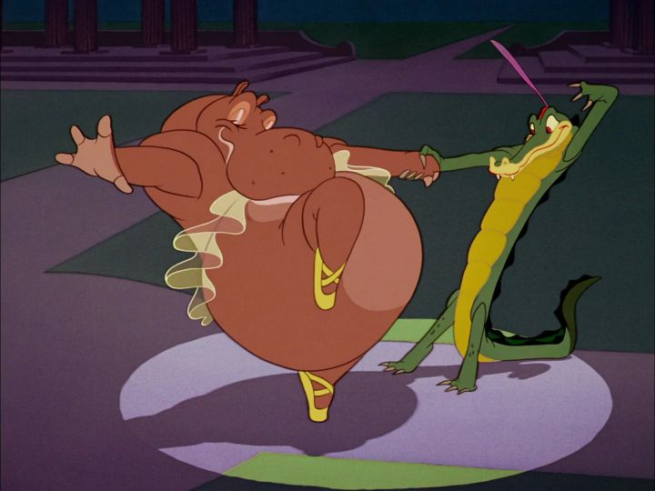

Critically, it's safe to assume "Fantasia" is one of the best, if not the best, animated film from Walt Disney Studios. Which isn't fair, since it's barely a film to begin with.It's also a surprise that 1940's "Fantasia" was only the third feature-length animated film Walt Disney produced, an example of his being too ambitious for his own good. In the way that "Snow White" revolutionized animation, proving that the medium could hold up an entire threatrical feature on its own, "Fantasia" was meant to revolutionize animation as an art form, as well as the concert-going experience. This would be a form of entertainment unlike any other. Like a concert, you might go to the theater in formal dress (a full tuxedo for example), receive a program at the door, and even enjoy an intermission in between (although longer epic films already had intermissions, so that part wasn't so unusual). You'd see an orchestra, but also animated short films synced to the music. And these weren't simple "Silly Symphony" shorts, but a broad range of shorts, some with stories and some without, some highly experimental and some with traditional character designs. This was even meant to be the first of a series, perhaps a natural expansion of what the "Silly Symphony" shorts were. Maybe "Fantasia" could become an annual tradition, with some new shorts added each year, as well as legacy shorts repeating, in the way that audiences would look forward to hearing the classics again. But whatever the plans were, a poor profit sobered Disney's ambitions for the rest of his career. Even after him, multiple attempts to make "Fantasia" a regular event failed to transpire. But "Fantasia" and its legacy remain, and its become one of the most impressive of Disney's classics, and one of the greatest anthology films of all time.Even as a child, who would tend to sleep through any concerts my parents brought me to, I thought our VHS of "Fantasia" and its opening sequence was ominous, and I was engaged from start to finish. It starts with a full orchestra taking their places, dimly lit to only show their black silhouettes. The conductor was Leopold Stokowski, who remains silient for most of the picture. Deems Taylor acts as the narrator, introducing the concert, as well as each short and musical number that follows. I watched the full 126-minute version on Disney Plus, and was surprised at the minor differences from the VHS I grew up with, mainly in the form of extended openings from Taylor, and a different format of intermission.When the music begins, bright lights of different colors flash in front of each musician in sync with the melody. The conductor is projected with a ball of light in front of him. It's a dazzling light show. But the animation hasn't even started yet! We then transition to short after short, first with abstract shapes and colors, but increasingly with shorts with full stories, and in the second half, more traditional Disney-esque character designs and humor.  Some standout shorts include "The Nutcracker Suite," a series of dances by different types of flowers, each representing a different country (a beautiful example of multi-culturalism, although today a warning preceeds it regarding stereotypes). There's "Rite of Spring," an extended story of the evolution and death of the dinosaurs. Of course, there's the classic "The Sorcerer's Apprentice," starring Mickey Mouse. The series ends with the horrifying "Night on Bald Mountain," an honest depiction of hell that you'd never expect from Disney animators, but then juxtaposed perfectly with the hopeful "Ave Maria" segment. All of the shorts are wonderful, particularly the more experimental ones, which are surprises considering they came from the house that invented Donald Duck and Goofy. If there was ever any doubt that the animators at the studio were true artists, this would surely put that to rest. Of course, even decades later, some critics still sub-consciously think of cartoons as kids-only entertainment, but they've never seen "Fantasia," or the indirect nudity in shorts like "The Pastoral Symphony." Despite the variety of content that might be too romantic or scary for children, I didn't mind any of it when I first saw the movie, maybe at five years of age. Naturally, the music is all beautiful too. It isn't necessarily recorded at the highest quality compared to modern standards, but it's performed well. And these are the classics, so its hard to deny the music's beauty. For many viewers, this is an easy gateway to become interested in classical music, opposed to the typical pop and rock kids are into these days.I can't help but wonder if "Fantasia" would have been more successful as a real concert, with a live orchestra. In the film, we see colored lights and projections behind the musicians, a cool effect that wouldn't be impossible in most auditoriums, and would be far more engaging than most classical concerts. Perhaps even projecting the silent animated films behind the musicians as they accompany it live could be an option, not unlike how some silent movies are played today in theaters that still have old-fashioned pipe organs. Concerts already play each year, and this would have been a better concert. But instead, "Fantasia" was packaged as a film, pre-recorded and easy to replay, which results in different expectations."Fantasia" is, from an artistic standpoint, the greatest animated film Disney produced, and therefore, one of the most important works of animated art ever made.
- "Ani" More reviews can be found at : https://2danicritic.github.io/ Previous review: review_Fairy_Tail_-_Phoenix_Priestess Next review: review_Fantasia_2000